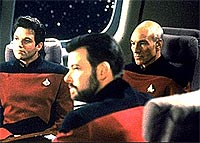
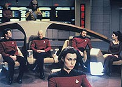
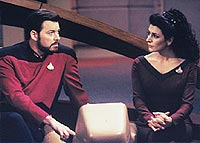
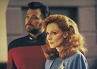
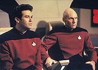

|
MANCHETE
DO EPISDIO
Perda de
memria traz nova iluminao
para os tripulantes da Enterprise-D
Episdio
anterior | Prximo
episdio
Sinopse:
Data Estelar: 45494.2.
Aps ser rastreada por uma nave aliengena no-identificada, a
tripulao da Enterprise, incluindo Data, tem uma sria, mas
seletiva, perda de memria. Embora tenham esquecido quem so e o
que fazem, os tripulantes ainda possuem as habilidades e
conhecimentos que permitem a eles operar a nave. Toda a comunicao
com o exterior foi interrompida, mas a tripulao deduz que eles
estavam em batalha, devido existncia de destroos de uma
pequena nave aliengena nas proximidades.
 Aps
muitos esforos, a tripulao ganha acesso ao computador da nave,
que fornece a eles nomes, fotos e postos de todo o pessoal responsvel
pela operao crucial da nave. J que o conhecimento no
desperta nenhuma memria, ningum estranha quando um comandante
Keiran MacDuff listado como o segundo em comando.
Mais tarde, Geordi e Data descobrem informaes ligadas sua
misso --eles foram ordenados a invadir o territrio Lisiano e
destruir seu centro de comando central. A informao sugere que os
Lisianos seriam os responsveis pela perda de memria da tripulao.
As ordens tambm exigem que a Enterprise mantena silncio de rdio
absoluto.
Na ponte, a tripulao est desconfortvel com o pensamento de
destruir uma pequena nave Lisiana, especialmente quando eles
descobrem que a Enterprise muito mais poderosa que a nave
"inimiga". Picard quer contatar a Federao para
verificar, mas MacDuff insiste que ele no pode, lembrando-o de que
as ordens estabelecem que eles esto em guerra com os Lisianos e no
devem entrar em contato com ningum. No vendo outra escolha,
Picard dispara e destri a nave Lisiana.
 Ainda
desconfortvel, Picard procura um meio de restaurar as memrias da
tripulao. Ele envia Data e Geordi para acessar os registros mdicos
da tripulao, mas a dupla se v incapaz da tarefa. Eles tambm
descobrem que os relatrios da misso, os registros da tripulao
e os dirios pessoais esto desaparecidos, o que os deixa bastante
incomodados. MacDuff, entretanto, aponta que tudo o que est
acontecendo consistente com a informao que eles tm dos
Lisianos. Desesparada, a tripulao decide que a dra. Crusher deve
tentar um perigoso tratamento para restaurar a memria sem o
recurso de consultar os registros mdicos de seus pacientes.
MacDuff imediatamente se voluntaria para o tratamento, durante o
qual ele parece sofrer um ataque espasmdico. Aps a interrupo
da sesso, ele diz a Crusher que ainda no se lembra de nada.
Enquanto Picard se prepara para atacar o comando central Lisiano,
ele descobre que os Lisianos so to inferiores tecnologicamente
Enterprise que so praticamente indefesos. Incapaz de justificar
moralmente o ataque, ele ordena a Worf que abra um canal de comunicao.
MacDuff exige o controle ttico para abrir fogo contra os Lisianos,
mas Riker o tonteia com um feiser.
O disparo revela que MacDuff na realidade um aliengena. Mais
tarde, aps a dra. Crusher restaurar as memrias da maior parte da
tripulao, Picard descobre que MacDuff um membro de uma raca
que est em guerra com os Lisianos h dcadas. Embora eles tenham
o poder de manipular computadores e suprimir memrias, sua
tecnologia de armas era inferior. Da a tentativa de usar a
Enterprise como um fantoche para terminar seu conflito com os
Lisianos.
Comentrios:
"Conundrum"
um episdio bastante divertido, e totalmente focado na tripulao
da Enterprise. O estudo da personalidade dos personagens bastante
interessante porque permite que eles interajam sem saber como suas
relaes se estabeleciam anteriormente, embora seu comportamento bsico
continue o mesmo.
 Jean-Luc
Picard se mostra o mesmo lder de sempre --to lder que foi
capaz de no entrar em conflito e dividir sua tripulao quando
Worf levantou a hiptese de que ele, e no Picard, fosse o capito
da Enterprise. Jean-Luc, embora mostre claramente nos dilogos sua
fora de comando e sua ascendncia sobre o resto da tripulao,
aceita tranquilamente uma posio de inferioridade.
Igualmente interessante a vontade de Worf de ser o comandante. A
atuao do Klingon mostra muito de sua prpria personalidade
--sempre combativa e contestadora--, juntando-a s prprias
caractersticas de sua raa, que incluem a conquista do poder pela
honra de suas aes. Como ningum tinha memria da "honra
das aes passadas", seria muito difcil para Worf aceitar
Picard como capito com base em algumas bolinhas coladas no pescoo.
E se ver Worf no comando j foi interessante, mais legal ainda foi
v-lo perder a cadeira de capito para Picard. Sua expresso de
decepo, seu pedido de desculpas e a grande reao de Picard,
que nem se incomodou com o episdio, deixam muito claro quem merece
estar sentado ali.
 O
trio amoroso composto por Riker, Troi e Ro Laren tambm bastante
interessante, principalmente dado o histrico entre Will e a
alferes Bajoriana em episdios passados. Extraindo-se as ms
lembranas e os preconceitos, v-se que os dois combinam bastante
um com o outro, com o mesmo esprito sarcstico e arrojado. Mais
engraadas ainda so as situaes em que Troi quase relembra seu
passado com Will, que ainda mantm grande atrao pela
conselheira, mas est atualmente enrolado com Ro Laren. O fim do
episdio traz tambm um momento hilrio, em que o
primeiro-oficial se v s voltas com a dupla, j de posse de suas
memrias antigas. "Quem tudo quer nada tem", a lio
do dia para o pobre Will.
A tenso final do episdio mais uma vez consolida o esprito
nobre de Picard e seus colegas a bordo da Enterprise --incluindo
Worf, que se redime de sua sede de poder inicial. A deciso de no
atacar o comando central Lisiano s o que poderamos esperar
desse grupo de personagens, com memrias intactas ou no. Jean-Luc
continua sendo o lder de sempre, e, em momentos assim, chega a
fazer o telespectador sentir uma tremenda admirao pelo capito
da Enterprise.
Tirando o extraordinrio estudo dos personagens, a trama em si no
diz muito. Embora esteja razoavelmente bem arrumada, sem muitos
furos, difcil aceitar certos detalhes, como o fato de o
bloqueio da memria ser totalmente reversvel e como os primitivos
aliengenas serem capazes de alterar crebros e computadores da
Enterprise com grande facilidade ( difcil de acreditar
especialmente que uma raa capaz de mexer com os circuitos de Data
ou do computador da nave seja to primitiva tecnologicamente, a
ponto de no possuir armas melhores que a dos Lisianos --para o bem
ou para o mal, tecnologia e poder blico andam sempre de mos
dadas).
 Mesmo
assim, vale dizer que, convincentes ou no, as explicaes que
viabilizam a histria foram todas dadas, de modo que possvel
suspender a descrena e assistir a este episdio sem ridicularizar
sua premissa. Outro problema, talvez at mais grave, porque tem a
ver com o contedo dramtico do segmento, a extrema
previsibilidade da histria. Aposto que grande parte de audincia
j matou a charada do que estava acontecendo assim que viram aquele
"novo comandante" na ponte.
Do ponto de vista tcnico, o episdio mostra a competncia de
costume. Atuaes dentro do padro, direo sem inovaes,
mas competente, bonitas tomadas externas da Enterprise e um belo
efeito do tiro de feiser no comandante MacDuff (revelando sua
natureza aliengena) tambm ajudam a fazer de "Conundrum"
uma hora bem gasta.
Citaes:
Geordi - "Looks
like we're all in the same boat."
("Parece que estamos todos no mesmo barco.")
Riker - "Make that 'the same starship'."
("Melhor dizendo, 'na mesma nave'."
Picard - "I'm not content simply to obey orders. I need to
know that what I'm doing is right."
("No estou contente em simplesmente obedecer ordens. Preciso
saber que o que estou fazendo est certo.")
Picard - "One photon torpedo would've ended their war."
("Um torpedo fotnico teria terminado a guerra deles.")
Riker - "It almost did."
("E quase terminou.")
Riker - "Well, I'm glad that I ran into the, the two of you.
When you have no memory of who you are, or who anybody else is, you
find yourself in a hairy--"
("Bem, estou feliz de ter encontrado a, as duas. Quando voc no
tem memria de quem , ou de quem os outros so, voc se
encontra em uma difcil--")
Ro - "The counselor tells me that at times like that, we
might do the things that we've always wanted to do."
("A conselheira me disse que em tempos como esse, ns faramos
as coisas que sempre gostaramos de ter feito.")
Riker - "She said that?"
("Ela disse isso?")
Troi - "It's psychologically valid."
(" psicologicamente vlido.")
Ro - "Commander, don't worry about it. But as far as I'm
concerned, you and I have shared something that we will treasure
forever."
("Comandante, no se preocupe com isso. Mas at onde isso me
diz respeito, voc e eu dividimos algo que nutriremos para
sempre.")
Trivia:
 Originalmente "Conundrum" foi escrito para a quarta
temporada, mas acabou guardado para o quinto ano, e teve mais
material adicionado ao roteiro original, como a marcante presena
de Ro, por exemplo.
Originalmente "Conundrum" foi escrito para a quarta
temporada, mas acabou guardado para o quinto ano, e teve mais
material adicionado ao roteiro original, como a marcante presena
de Ro, por exemplo.
A msica
que Riker toca em seu saxofone neste episdio "The Nearness
of You", a mesma que ele tocou para Minuet no episdio "11001001",
da primeira temporada.
Erich Anderson, que aqui atua como o "comandante" Keiran
MacDuff, j apareceu em sries como "Quantum Leap",
"Melrose Place", "ER" e principalmente em
"NYPD Blue", como o personagem Don Kirkendall. Erich tambm
foi uma das vtimas de Jason Voorhes em "Friday the 13th part
IV: The Final Chapter".
Ficha
tcnica:
Histria de Paul Schiffer
Roteiro de Barry M. Schkolnick
Direo de Les Landau
Exibido em 17/02/1992
Produo: 114
Elenco:
Patrick Stewart como
Jean-Luc Picard
Jonathan Frakes como William Thomas Riker
Brent Spiner como Data
LeVar Burton como Geordi La Forge
Michael Dorn como Worf
Gates McFadden como Beverly Crusher
Marina Sirtis como Deanna Troi
Elenco convidado:
Erich Anderson
como comandante Keiran MacDuff
Michelle Forbes como alferes Ro Laren
Liz Vassey como Kristin
Erick Weiss como um tripulante
Episdio
anterior | Prximo
episdio
|